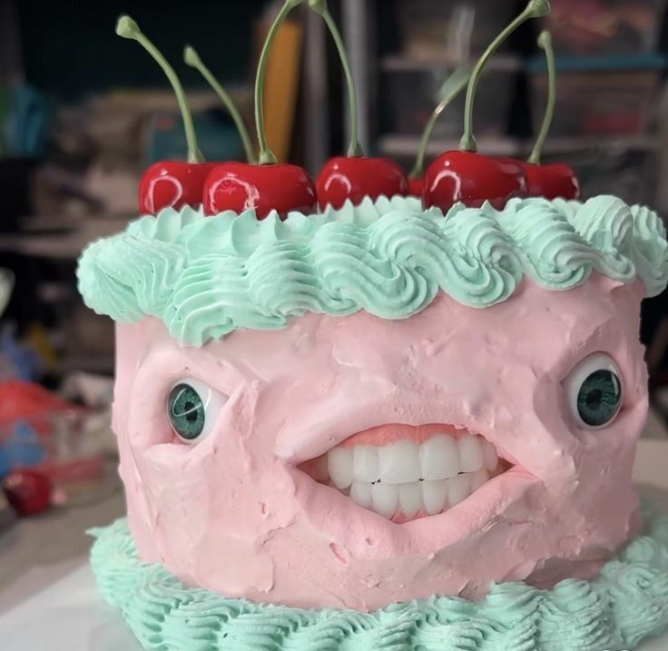

Cake

Cake made of human flesh and sacrifices
This cake is very delicious it tastes like the soul of the damned with a little touch of the innocent
Home
Ingredients
- Baking powder
- chilli
- egg
- idk the rest of cake recipe
- 4 damned souls
- 1 virgins soul(good of heart)
- milk
How to make
- put baking powder, chilli and egg in a big cauldron with 2 liters of milk
- mix mix swirl
- add 2 damned souls, mix until it looks nice
- mix the 2 damned souls and the virgins soul in a blender(important)
- bake the contents of the cauldron in 250 celsius for 4.5 hours
- take it out of the oven, use the blended souls to transmute the human characteristics of the cake
- eat c:
Home